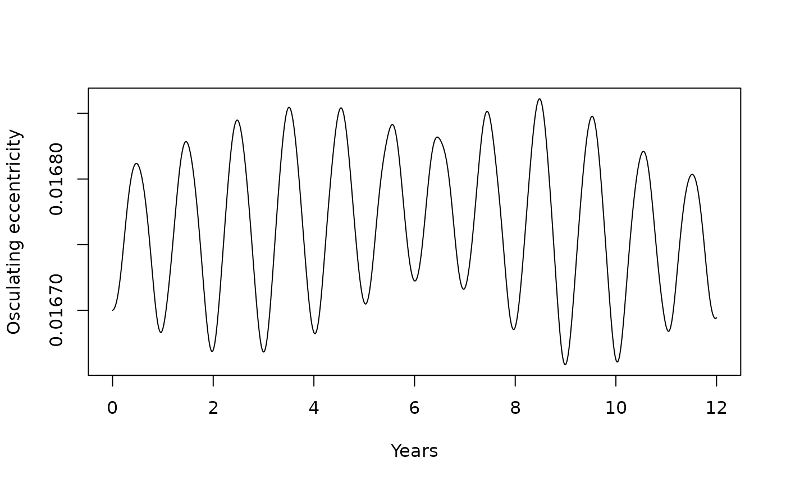

Osculating orbital elements of a body relative to a parent
Source:R/get_orbital_elements.R
get_orbital_elements.RdThe inverse of [add_body_keplerian()]: computes the classical Keplerian elements of `body`'s orbit about `parent` at every time step of a simulation, from their relative position and velocity. In a two-body system the elements are constant (up to integration error). With more bodies present they drift as the orbit is perturbed, and the value at each instant is the *osculating* orbit: the ellipse the body would follow from that moment on if every other perturbation were switched off.
Arguments
- sim_data
A tibble output from [simulate_system()].
- body
Character id of the orbiting body.
- parent
Character id of the body the orbit is measured about.
- mu
Gravitational parameter in m^3/s^2. The default, `NULL`, uses \(G M_{parent}\), the same convention as [add_body_keplerian()], so that elements round-trip exactly. Pass `G * (parent mass + body mass)` for the exact two-body relative orbit, which matters when the body's mass is not negligible (the Moon's is 1.2% of Earth's).
- G
The gravitational constant, used only when `mu` is `NULL`. Defaults to the value recorded by [simulate_system()], or to [gravitational_constant].
Value
A tibble with one row per time step and columns `time`, `a` (meters), `e`, `i`, `lan`, `arg_pe`, `nu` (degrees; angles other than `i` are in \([0, 360)\)), and `period` (seconds).
Details
The computation follows the standard textbook route. The specific angular momentum \(\mathbf{h} = \mathbf{r} \times \mathbf{v}\) gives the inclination (\(\cos i = h_z / h\)) and, through the node vector \(\hat{\mathbf{z}} \times \mathbf{h}\), the longitude of the ascending node. The eccentricity vector \(\mathbf{e} = (\mathbf{v} \times \mathbf{h})/\mu - \mathbf{r}/r\) points to periapsis and gives the eccentricity, the argument of periapsis (the angle from the node to \(\mathbf{e}\)), and the true anomaly (the angle from \(\mathbf{e}\) to \(\mathbf{r}\)). The semi-major axis comes from the vis-viva equation, \(a = 1 / (2/r - v^2/\mu)\).
Two cases are degenerate and need a convention. For an orbit in the reference plane (\(i = 0\)) the ascending node is undefined: `lan` is reported as 0 and `arg_pe` is measured from the x axis. For a circular orbit (\(e = 0\)) periapsis is undefined: `arg_pe` is reported as 0 and `nu` is measured from the ascending node (or the x axis).
For an unbound orbit (\(e \ge 1\)) `a` is negative and `period` is `NA`.
Examples
# \donttest{
# Round trip: the elements that went in come back out at t = 0
sim <- create_system() |>
add_sun() |>
add_body_keplerian("Mars", mass = mass_mars, parent = "Sun",
a = distance_mars_sun, e = 0.0934, i = 1.85,
lan = 49.6, arg_pe = 286.5, nu = 120) |>
simulate_system(time_step = seconds_per_day, duration = seconds_per_day * 687)
elements <- get_orbital_elements(sim, "Mars", "Sun")
elements[1, ]
#> # A tibble: 1 × 8
#> time a e i lan arg_pe nu period
#> <dbl> <dbl> <dbl> <dbl> <dbl> <dbl> <dbl> <dbl>
#> 1 0 227900000000. 0.0934 1.85 49.6 286. 120. 59330240.
# Two bodies: a and e are constant to integration error
range(elements$e)
#> [1] 0.09336329 0.09340662
# Earth's eccentricity drifting under Jupiter's pull
perturbed <- create_system() |>
add_sun() |>
add_planet("Earth", parent = "Sun") |>
add_planet("Jupiter", parent = "Sun", nu = 90) |>
simulate_system(time_step = seconds_per_day, duration = seconds_per_year * 12)
earth <- get_orbital_elements(perturbed, "Earth", "Sun")
plot(earth$time / seconds_per_year, earth$e, type = "l",
xlab = "Years", ylab = "Osculating eccentricity")

# }